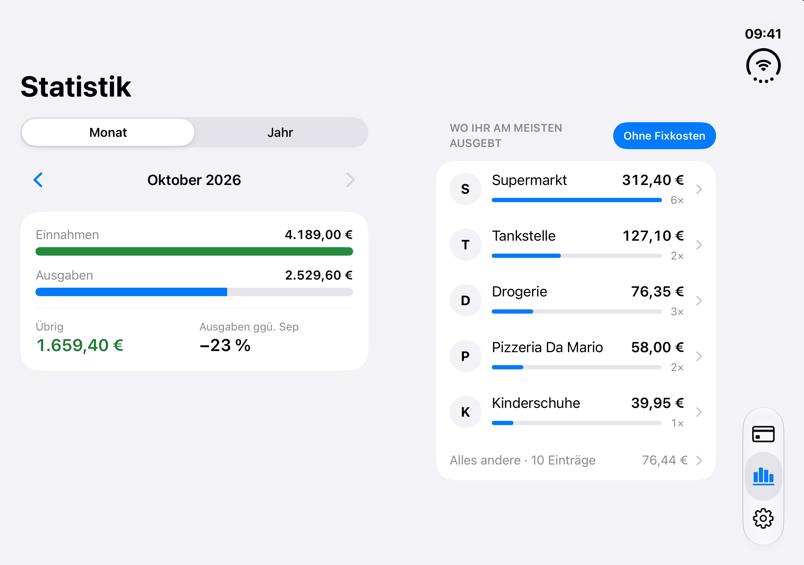
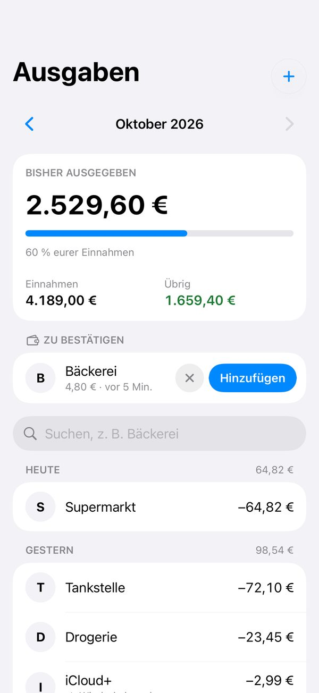
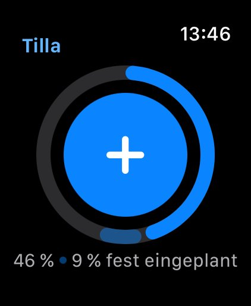
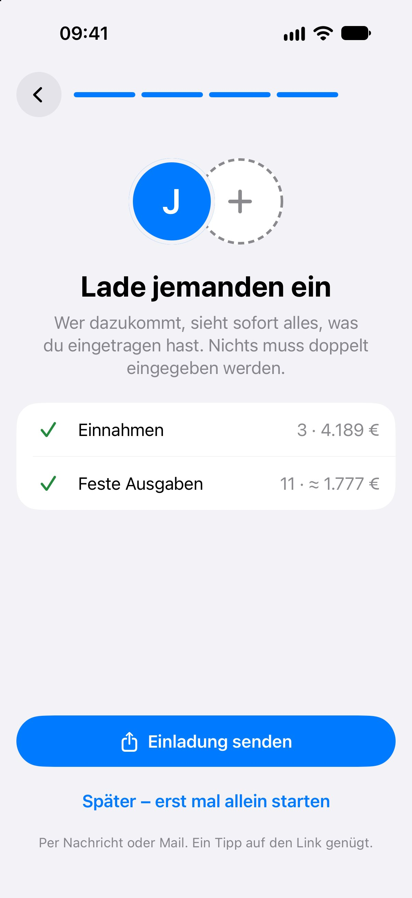
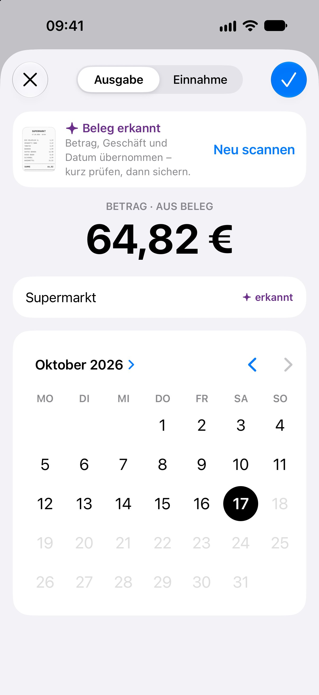
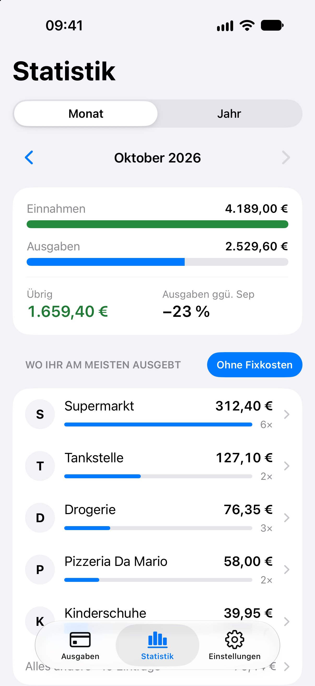
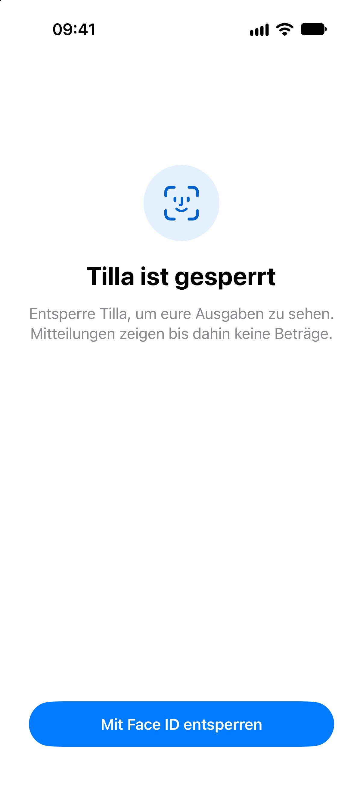

Gemeinsame Ausgaben im Blick
Das gemeinsame Haushaltsbuch für Paare, Familien und WGs: Ihr tragt ein, was ihr ausgebt, und seht jederzeit, wie viel von euren Einnahmen diesen Monat noch übrig ist – ohne Kategorien, Budgets oder Tabellen.




Eure Daten liegen nur auf euren Geräten und in eurem iCloud. Es gibt keinen Tilla-Server, keine Werbung und kein Tracking. Auf Wunsch schützt Face ID oder Touch ID die App.
- Kein Server
- Kein Tracking
- Keine Werbung
- Kein neues Konto
So funktioniert Tilla

Gemeinsam über iCloud
Ladet alle, mit denen ihr zusammenwohnt, per Nachricht ein – Partnerin oder Partner, Familie oder WG. Alle sehen sofort dasselbe, nichts wird doppelt eingetragen. Kein neues Konto, kein Passwort – Tilla nutzt eure Apple-ID.

In Sekunden eingetragen
Betrag tippen, schreiben wofür, fertig. Oder den Kassenbon scannen: Tilla erkennt Summe, Geschäft und Datum direkt auf dem Gerät. Nach jeder Zahlung mit Apple Pay schlägt Tilla die Ausgabe vor – mit einer Automation in der Kurzbefehle-App. Zum Kurzbefehl →

Feste Ausgaben tragen sich selbst ein
Miete, Kita, Strom oder das Fitnessstudio legt ihr einmal an. Tilla trägt sie am Fälligkeitstag ein – monatlich, alle zwei Wochen oder wie es bei euch eben ist. Ändert sich ein Betrag, gilt er ab dem Monat, den ihr wählt.

Seht, wohin euer Geld geht
Die Statistik zeigt Monat und Jahr: Einnahmen, Ausgaben, was übrig bleibt und wo ihr am meisten ausgebt. Mit „Ohne Fixkosten“ seht ihr, was im Alltag zusammenkommt.
Auf allen euren Geräten
Ein Haushalt auf iPhone, iPad, Mac und Apple Watch – über iCloud immer auf demselben Stand.

Die Jahresansicht zeigt Monat für Monat, was ihr ausgegeben habt und was reingekommen ist. So seht ihr auf einen Blick, welche Monate eng waren und was am Ende übrig bleibt.
Auf dem iPad hat Tilla eine Seitenleiste mit euren Monaten, daneben die Einträge als Tabelle – und den gewählten Eintrag gleich daneben, zum Ändern ohne weiteres Fenster. Die Statistik zeigt Monat, Jahr und das gewählte Geschäft auf einen Blick.
Tilla gibt es auch für den Mac: eure Einträge als Tabelle mit der Karte daneben, Belege einfach aufs Fenster ziehen und mit ⌥⌘N aus der Menüleiste eintragen. Derselbe Haushalt wie auf euren iPhones.

Mit Tilla auf der Apple Watch tragt ihr Ausgaben direkt am Handgelenk ein: „+“ tippen, Betrag eingeben, Geschäft wählen oder diktieren – gesichert. Der Ring zeigt, wie viel eurer Einnahmen diesen Monat schon ausgegeben ist. Die Uhr bekommt alles von eurem iPhone – was ihr ohne iPhone in der Nähe eintragt, kommt nach, sobald es wieder da ist.

Auf dem iPhone Duo nutzt Tilla beide Hälften des Displays: links der Monat, rechts eure Einträge. Neue Ausgaben öffnen sich daneben, der Monat bleibt sichtbar.
AußerdemSiri und KurzbefehleTägliche ErinnerungHell- und DunkelmodusFünf Sprachen
Jetzt im App Store
Tilla braucht iOS 18, iPadOS 18, watchOS 10 oder macOS 15 oder neuer und ein iCloud-Konto.

Neues vorab ausprobieren? Der Beta über TestFlight beitreten →
Fragen oder Feedback? Zum Support